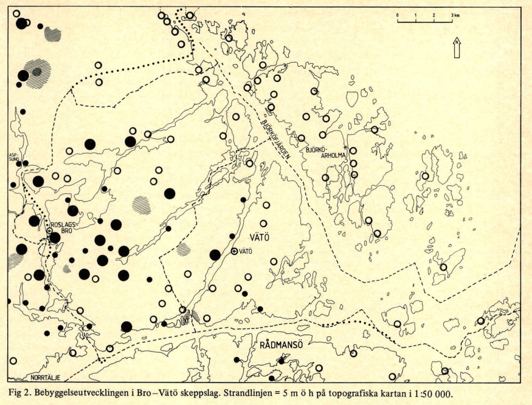
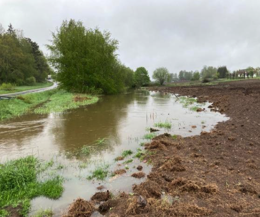

Farleden och Ledung
Sjösystemet från Norrtäljeviken (alternativt från Norsviken och Bagghusfjärden) upp mot Brosjön, Norrsjön och vidare till Torkan vid Vik samt åarna däremellan var under järnåldern/vikingatid del av en viktig farled. Vid Aspsundet smalnade vattnet av och bildade ett smalt sund. Vid denna plats byggdes vid den tiden en liten tät by. Förmodligen levde man av djurhållning, enklare jordbruk och förstås fiske.
 Strandförskjutningsmodell skapad via SGU:s karttjänst. Landhöjningen i våra trakter är ca 0.5 meter per 100 år. Dvs för ca 1000 år sedan stod vattnet åtminstone 5 meter högre än idag. Utdikning av sjösystemet som gjordes i slutet av 1800 talet sänkte vattennivå ytterligare flera meter. Med lätthet kunde man därmed förr i tiden ta sig via båt ut i skärgården antingen söderut till Norrtäljeviken eller österut via Norsviken och Bagghusfjärden. Eller med andra ord, trakten var en del av Roslagens inre skärgård.
Strandförskjutningsmodell skapad via SGU:s karttjänst. Landhöjningen i våra trakter är ca 0.5 meter per 100 år. Dvs för ca 1000 år sedan stod vattnet åtminstone 5 meter högre än idag. Utdikning av sjösystemet som gjordes i slutet av 1800 talet sänkte vattennivå ytterligare flera meter. Med lätthet kunde man därmed förr i tiden ta sig via båt ut i skärgården antingen söderut till Norrtäljeviken eller österut via Norsviken och Bagghusfjärden. Eller med andra ord, trakten var en del av Roslagens inre skärgård.

Prof. Björn Ambrosiani nämner Aspsund ett par ggr i skriften “Hundare, skeppslag och fornlämningar” från 1982 [6]. Kartbilden lånad från denna skrift visar hur vattenlinjen i trakten såg ut för ca 1000 år sedan. Ambrosiani resonerar i sin skrift"Det är kanske detta sund, som är det sista man passerar på vägen österut, som är landskapslagens Aspasund, utanför vilket landets lag inte längre gällde."Dock finns det ett par Asp(a)sund, längre ut i skärgården samt även ett på Åland. Det finns de som menar att det var där som gränsen för påtvingad Ledungstjänst drogs. Men det verkar finnas olika tolkningar.
Kartbilden [6] är lånad från B. Ambrosiani “Hundare, skeppslag och fornlämningar”. Aspsund är utmärkt i vänstermarginalen av bilden och de två svarta ringarna avser gravfälten i Aspsund och Brölunda.
Gränsen mellan ett "hundare" och ett skeppslag (Lyhundra och Bro-Vätö skeppslag) senare kallat “härad” går också just här med vattnet som gräns. Hundare var en vikingatida administrativ distriktsindelning för bland annat Svealand men återfinns även i tex England. Varje hundare skulle enligt Upplandslagens "laga ledung" kunna uppbåda fyra ledungsskepp vid krigstillstånd. En sorts tidig militärtjänstgöring.
Varje stridskepp bestod av 12 par roddare samt en styrman, dvs 25 man. Detta ggr 4 skepp blir 100 man vilket man tror är ursprunget till ordet "hundare". Enligt B. Ambrosiani motsvarar det också antalet bebyggelseenheter (byar) per hundare ganska exakt. Han baserar detta på på antalet fornlämningar per hundare/härad.
Lyhundra skulle med andra ord kunna sätta fyra ledungsbåtar om totalt 100 man i sjön. Lyhundra som exempel hade enligt Ambrosianis undersökning 80 bebyggelseenheter med fornlämningar från yngre järnålder.
 Vid byn Vik ett par km norrut i samma farled har man hittat ostkustens enda bevarade ledungsskepp från denna tid Viksbåten, daterad till mitten av 1000-talet. Viksbåten som kan ha varit ett av Lyhundras mindre ledungsskepp har alltså färdats genom sundet vid en tid då landskapet såg betydligt annorlunda ut än idag. Den hittade vid dikning år 1898 och finns uppställd på lokala museumet Erikskulle.
Jag har också genom Gunilla Larsson (Marinarkeolog) fått information om att flera båtsfynd, sannolikt från samma tid gjordes i Aspsund under sjösänkning av sjösystemet i slutet av 1800-talet. Bland annat ska en "jätteåra" ha hittats. Troligen en styråra. Vad som hände med dessa fynd är oklart. Kanske ligger de ännu kvar i dyjorden.
Vid byn Vik ett par km norrut i samma farled har man hittat ostkustens enda bevarade ledungsskepp från denna tid Viksbåten, daterad till mitten av 1000-talet. Viksbåten som kan ha varit ett av Lyhundras mindre ledungsskepp har alltså färdats genom sundet vid en tid då landskapet såg betydligt annorlunda ut än idag. Den hittade vid dikning år 1898 och finns uppställd på lokala museumet Erikskulle.
Jag har också genom Gunilla Larsson (Marinarkeolog) fått information om att flera båtsfynd, sannolikt från samma tid gjordes i Aspsund under sjösänkning av sjösystemet i slutet av 1800-talet. Bland annat ska en "jätteåra" ha hittats. Troligen en styråra. Vad som hände med dessa fynd är oklart. Kanske ligger de ännu kvar i dyjorden.

Högt vattenstånd i ån våren 2021.